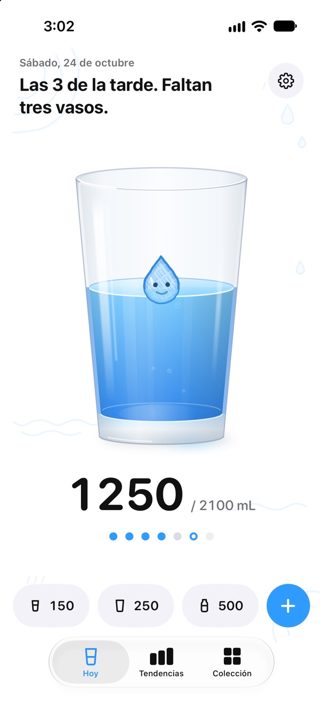
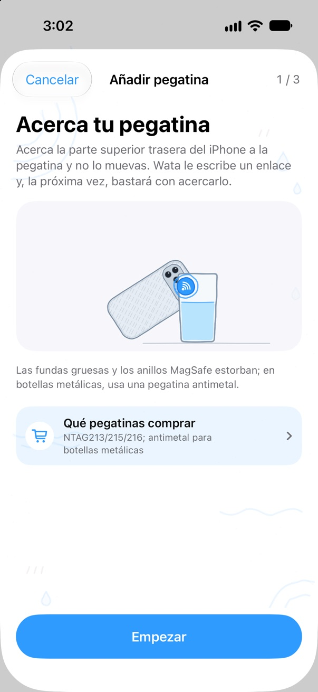
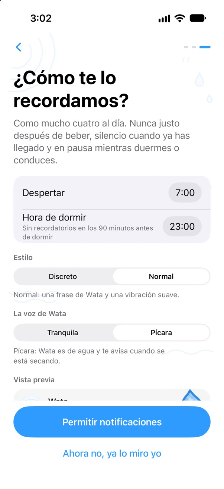
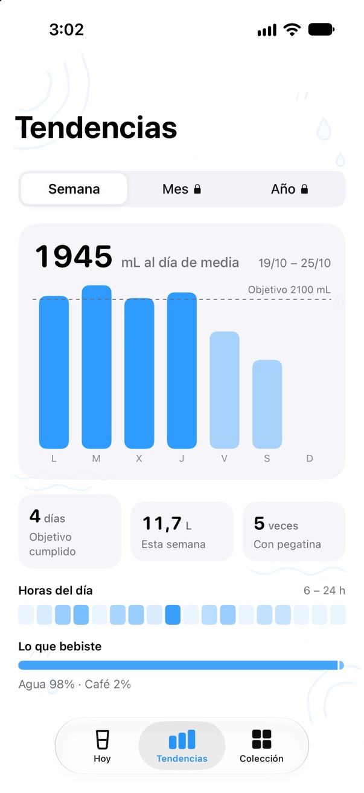
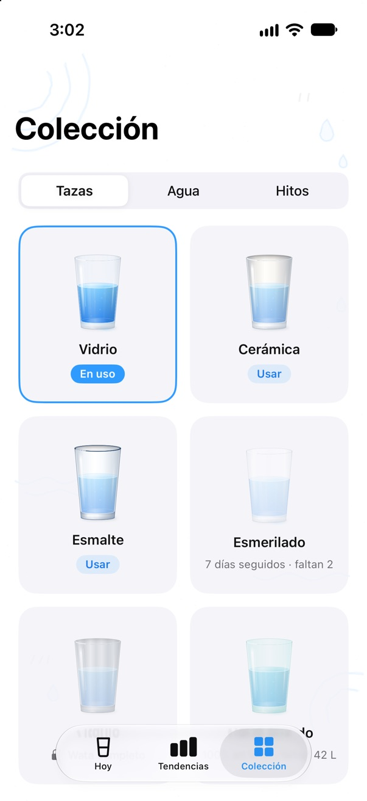
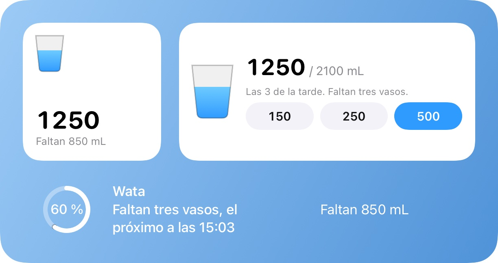
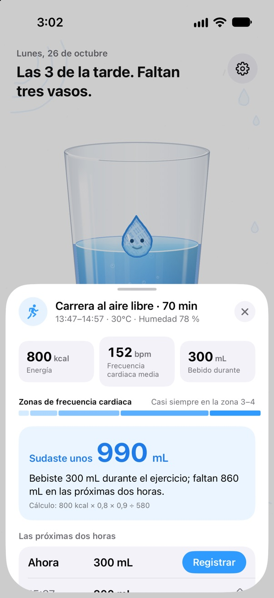

Móvil a la botella. Vaso registrado.
Pon una pegatina NFC en tu botella. Acerca el iPhone, toca el aviso que aparece y el agua queda en Salud sin buscar la app. Wata te avisa según lo que te falta por beber, no según el reloj, y vive en un vaso de verdad que se agita cuando mueves el teléfono.
Muy pronto en el App Store
iPhone XS o posterior con iOS 18 · Apple Watch con watchOS 11

Una pegatina en cada botella
Sirve cualquier pegatina NFC con el chip adecuado; por lo que cuesta un café tienes varias. Vincúlala una vez en Wata y, a partir de entonces, basta con acercar el iPhone para registrar la botella entera.
- Wata te muestra dónde acercar la pegatina en tu modelo de iPhone, y pide a iPhone Duo que se pliegue primero.
- Cada pegatina es un recipiente: su nombre, cuánto cabe y qué contiene.
- Si vuelve a leerla en pocos minutos, pregunta antes de registrar, por si la botella y el teléfono van en la misma bolsa.
- Durante diez segundos después de registrar puedes dejarlo en la mitad o deshacerlo.
- Una familia puede compartir un vaso: cada iPhone registra lo suyo.
- El iPhone lee una pegatina con la pantalla encendida y pide tocar su aviso; con una automatización de Atajos se registra sin tocar nada.

Recordatorios que siguen lo que bebes
Wata planifica los recordatorios según lo que te falta hoy, y los vuelve a planificar después de cada vaso, lo hayas registrado donde lo hayas registrado.
- Nunca en los 45 minutos siguientes a beber; en silencio cuando ya has llegado, y en los 90 minutos antes de dormir.
- Unos pocos al día como mucho, repartidos de la mañana a la noche, y cada uno te pide un vaso pequeño.
- Registra directamente desde la notificación, o toca Más tarde.
- Filtros de concentración para avisar solo a la hora en punto o no avisar, y una pausa opcional durante las reuniones.

Wata está hecha de agua
La gota de tu vaso muestra cómo va el día: dormida por la mañana, sedienta cuando te quedas atrás, enfurruñada tras horas sin un sorbo, a punto de llorar en una noche con mucho por beber, y saltando entre confeti cuando llegas al objetivo.

TranquilaLas 3 de la tarde. Faltan 850 mL; con 280 mL basta.
PícaraLas 3 de la tarde. Estoy encogiendo. En serio.
Pícara, ignorada dos vecesParece que estos avisos no funcionan. Me evaporaré en silencio.
- Dos voces: tranquila, con la hora y lo que falta, o pícara, una mascota que te hace sentir culpable para que bebas un vaso.
- La pícara solo pide un vaso pequeño, y se calla cuando ya has llegado, cerca de la hora de dormir o si has bebido demasiado y muy rápido.
- Cada recordatorio lleva la cara de Wata en ese momento.
- Textos escritos para cada idioma, no traducidos.
En Salud, en tu muñeca, en tu pantalla de inicio
Cada vaso llega a Salud como agua, y el agua que otras apps registran allí cuenta una sola vez. El objetivo se calcula con tu peso, tus entrenamientos y, si quieres, el calor que hace donde estás.
- Apple Watch: un anillo, tres cantidades rápidas y la Digital Crown, con complicaciones para tu esfera.
- Widgets para las pantallas de inicio y de bloqueo, un botón en el centro de control, Siri y Atajos.
- Tendencias por semana; por mes y año con Wata completo, con el resumen del año.
- Colección: vasos en los que beber, texturas de agua y unos pocos hitos que se ganan, no que se reparten cada día.
- En iPhone Duo: el vaso junto al plan del día cuando está abierto, y un panel de botones grandes en modo mesa.




Después de entrenar, recupera lo que has sudado
Cuando un entrenamiento llega a Salud, Wata calcula el sudor a partir de la energía que quemaste y del aire en el que lo hiciste, lo suma al objetivo del día y reparte lo que hay que reponer en las dos horas siguientes.
- Hasta 300 mL cada 40 minutos, con una bebida isotónica tras un entrenamiento largo o con calor.
- Un recordatorio antes del entrenamiento que haces cada semana a la misma hora.
- Con Wata completo: recordatorios durante el entrenamiento con una automatización de Atajos, nunca más de lo que sudas; una prueba de sudor que hace tuya la estimación; la recuperación en la pantalla de bloqueo.

Gratis, o un pago para siempre
Wata se puede usar gratis, con un anuncio al día como mucho. Un solo pago quita los anuncios y lo desbloquea todo, para toda tu familia.
Wata
Gratis
- Registro, recordatorios, Salud y Apple Watch, widgets, Siri
- Una pegatina
- Tendencias por semana, consejos después de entrenar
- Como mucho un anuncio al día: ninguno los tres primeros días, nunca mientras registras
Wata completo
US$2.99 una vez
- Sin anuncios, nunca
- Todas las pegatinas que quieras
- Todo tu historial: meses, años, el resumen del año
- Todas las bebidas, todos los vasos y todas las texturas de agua
- Recordatorios durante el entrenamiento y la prueba de sudor
- En Compartir en familia; sin suscripción
Todas las actualizaciones de Wata 1 son gratis, y los anuncios de la versión gratuita nunca serán más frecuentes. El App Store muestra el precio de tu país.
Tu agua es tuya
Lo que bebes se guarda en tus dispositivos y en Salud, que puede guardarlo en tu iCloud; el desarrollador nunca lo recibe. Nada sobre tu salud llega jamás a la red publicitaria de la versión gratuita.